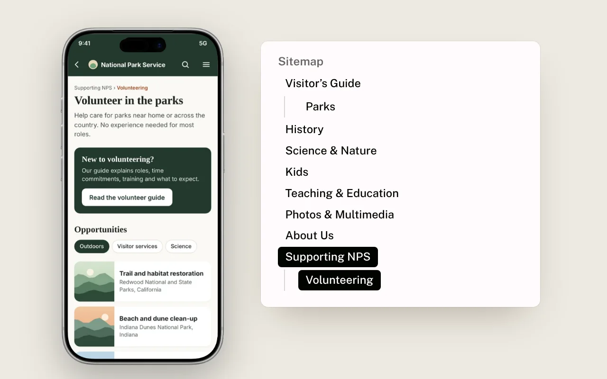
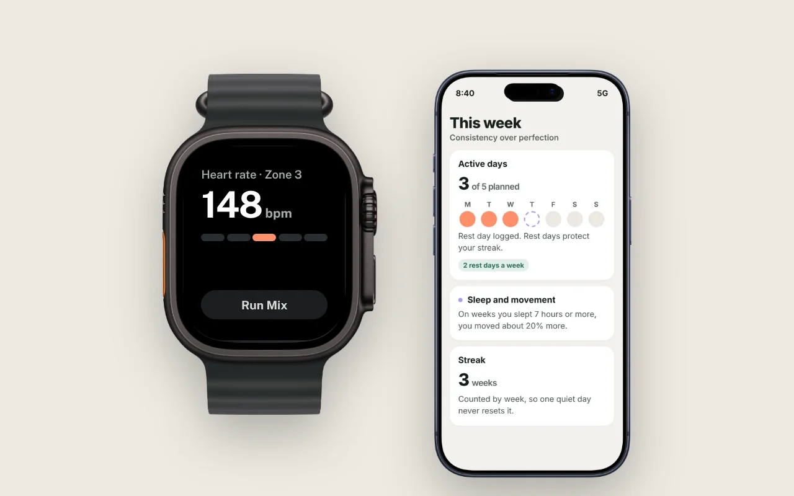
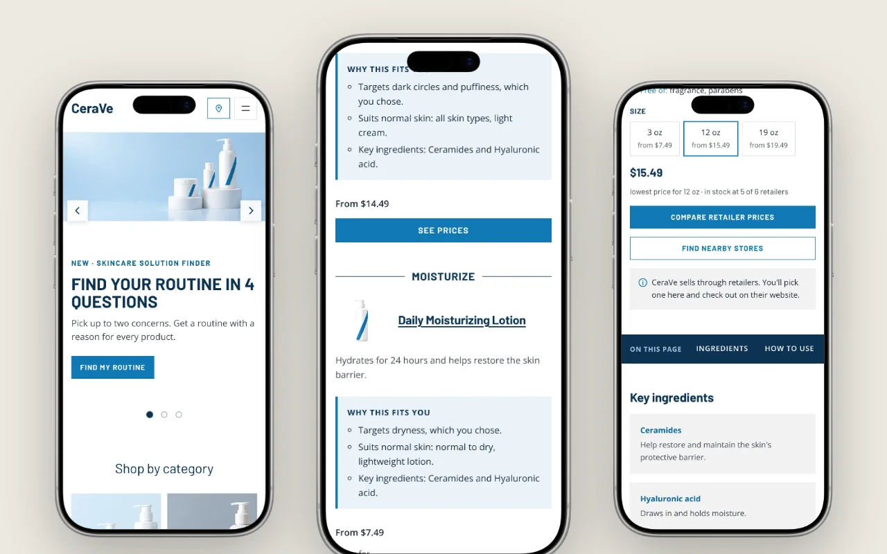

I’m Vedant, a product designer and UX researcher building data-driven, system-level and AI-native products.
I design for the people who use a product and the teams who run it. Currently at Intuit, working across TurboTax and QuickBooks.
- Product Designer, Intuit2026 to now
- UI/UX Designer, Hexaware2020 to 2024
- M.S. Human-Computer InteractionDePaul University, 2026
- Chicago, open to workSaaS, healthcare, edtech, fintech
Selected work
2025 to 2026

Treevah
202651% of web components didn’t match the design handoff. I audited 766 of them and planned the study that shaped what to fix before Beta.
AI file manager · UI/UX Designer · Team of 5

Invisible Obstacles
2025One date field stopped all four screen-reader users. The redesign passes an automated WCAG 2.1 AA check.
Accessible forms · UX Researcher & Designer

NPS.gov
2025–26People agreed on the labels, then still couldn’t find things. Three card sorts and three tree tests rebuilt the structure.
Information architecture · UX Designer

Wearable Health
2025–26People pay for health features, then quietly stop using them. Fourteen interviews became Tend, for watch and phone.
Health wearables · UX Researcher & Designer

CeraVe
2025–26Shoppers found the products, then lost confidence choosing. All 12 recommendations are built into a coded prototype.
E-commerce usability · UX Researcher
How I can help your team
Research, design and the structure underneath
Design products end to end
I take a problem from flows and wireframes to interface design and coded prototypes, with engineers in the loop.
- End-to-end product design
- Interaction design
- Figma
- HTML, CSS, JavaScript
Turn research into decisions
I plan and run studies, then turn what people do into priorities a team can act on.
- Moderated usability tests
- Interviews and task analysis
- Heuristic evaluation
- Analytics and A/B tests
Make products hold together
Information architecture, design systems and accessibility, so a product stays usable as it grows.
- Card sorting and tree testing
- Design systems
- WCAG 2.1 AA, screen-reader testing
- axe audits